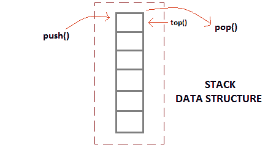
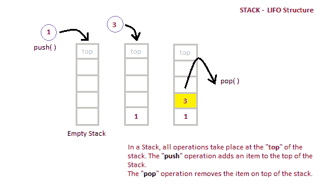

什么是栈数据结构？
原文：https://www.studytonight.com/data-structures/stack-data-structure
栈是一种抽象数据类型，容量有限(预定义)。这是一种简单的数据结构，允许以特定的顺序添加和移除元素。每次添加一个元素，它都会出现在栈的顶部，唯一可以移除的元素是栈顶部的元素，就像一堆对象一样。

栈的基本特征
- 栈是类似数据类型的有序列表。
- 栈是一个后进先出(后进先出)结构，或者我们可以说后进先出(先进先出)。
push()函数用于向栈中插入新元素，pop()函数用于从栈中移除元素。只有称为顶部的堆叠一端允许插入和移除。- 当栈完全满时，称其处于溢出状态；如果栈完全空，称其处于下溢状态。
栈的应用
栈最简单的应用是反转一个单词。你把一个给定的单词一个字母一个字母地推进栈，然后从栈中弹出字母。
还有其他用途也像:
- 从语法上分析
- 表达式转换(中缀到后缀、后缀到前缀等)
栈数据结构的实现
栈可以使用数组或链表轻松实现。数组很快，但大小有限，链表需要开销来分配、链接、取消链接和解除分配，但大小不受限制。这里我们将使用数组实现栈。

PUSH 运算的算法
- 检查栈是否已满。
- 如果栈已满，则打印溢出错误并退出程序。
- 如果栈未满，则递增顶部并添加元素。
POP 操作的算法
- 检查栈是否为空。
- 如果栈为空，则打印下溢错误并退出程序。
- 如果栈不为空，则在顶部打印元素并递减顶部。
下面我们有一个简单的 C++ 程序来实现栈数据结构，同时遵循面向对象的编程概念。
如果不熟悉 C++ 编程概念，可以从这里学习。
/* Below program is written in C++ language */
# include<iostream>
using namespace std;
class Stack
{
int top;
public:
int a[10]; //Maximum size of Stack
Stack()
{
top = -1;
}
// declaring all the function
void push(int x);
int pop();
void isEmpty();
};
// function to insert data into stack
void Stack::push(int x)
{
if(top >= 10)
{
cout << "Stack Overflow \n";
}
else
{
a[++top] = x;
cout << "Element Inserted \n";
}
}
// function to remove data from the top of the stack
int Stack::pop()
{
if(top < 0)
{
cout << "Stack Underflow \n";
return 0;
}
else
{
int d = a[top--];
return d;
}
}
// function to check if stack is empty
void Stack::isEmpty()
{
if(top < 0)
{
cout << "Stack is empty \n";
}
else
{
cout << "Stack is not empty \n";
}
}
// main function
int main() {
Stack s1;
s1.push(10);
s1.push(100);
/*
preform whatever operation you want on the stack
*/
}
| 顶部位置 | 栈状态 |
| -1 | 栈为空 |
| 0 | 栈中只有一个元素 |
| N-1 | 栈已满 |
| N | 栈溢出状态 |
栈操作分析
下面提到的是可以在栈数据结构上执行的各种操作的时间复杂度。
- 按压操作:0(1)
- 弹出操作:0(1)
- 顶部操作:0(1)
- 搜索操作 : O(n)
push()和pop()函数的时间复杂度是O(1)，因为我们总是要从栈的顶部插入或移除数据，这是一个一步到位的过程。
既然我们已经了解了数据结构中的栈，您也可以查看以下主题: